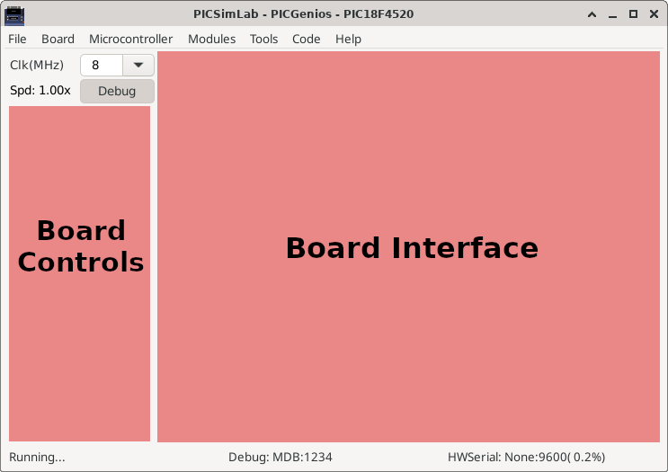
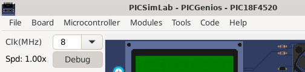
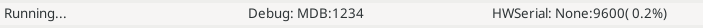

3.1 Main Window
The main window consists of a menu, a status bar, a frequency selection combobox, an on/off button to trigger debugging, some board-specific controls and the part of the board interface itself.
In the title of the window is shown the name of the simulator PICSimLab, followed by the board and the microcontroller in use.

The frequency selection combobox directly changes the working speed of the microcontroller. The “Spd” label show the ratio between simulation speed and real time. when the “Spd” label goes red indicates that the computer is not being able to run the program in real time for the selected clock. In this case the simulation may present some difference than expected and the CPU load will be increased.
The on/off button to enable debugging is used to enable debugging support, when active simulation load is increased.

The first part of the status bar shows the state of the simulation, in the middle part the status of the debug support and in the last part the name of the serial port used, its default speed and the error in relation to the real speed configured in the microcontroller.
